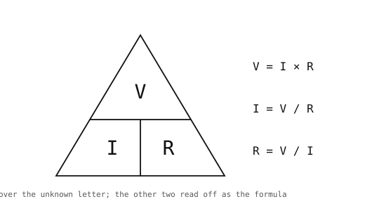

3.6. Основи електроніки¶
Для керування будь-чим зовнішнім через вивід GPIO потрібна схема на іншому кінці виводу. Три концепції базової електроніки — напруга, струм та їх взаємозв’язок через резистор — присутні в кожній такій схемі.
3.6.1. Напруга, струм, опір¶
Напруга (вольти, В) — це різниця потенціалів між двома точками в схемі. Шина живлення мікросхеми може бути на рівні 3,3 В відносно землі; вивід GPIO, переведений у стан «висока напруга», знаходиться на тому самому рівні 3,3 В.
Струм (ампери, А, або міліампери, мА) — це потік заряду через провідник. Струм завжди повертається туди, звідки він прийшов, тому для протікання будь-якого струму схема повинна утворювати замкнений контур від джерела живлення до землі.
Опір (оми, Ом) характеризує, наскільки провідник перешкоджає цьому потоку. Призначення резистора — задати струм до відомого значення при відомій напрузі.
Закон Ома пов’язує їх між собою:

Закон Ома у трьох формах.¶
Іншими словами: напруга на резисторі дорівнює струму, що протікає через нього, помноженому на опір. Знаючи будь-які два з трьох значень, можна знайти третє алгебраїчно.
3.6.2. Діоди¶
Діод — це двовивідний компонент, що пропускає струм в одному напрямку (від анода до катода) і блокує його в протилежному.

Діод проводить струм лише від анода до катода. Світлодіод (LED) — це діод, що випромінює світло під час протікання струму.¶
Діод також має пряму напругу (Vf) — падіння напруги на ньому під час протікання струму у провідному напрямку. Коли прикладена напруга досягає Vf, діод поводиться приблизно як дріт; нижче цього значення струм практично не тече.
3.6.3. Світлодіоди¶
Світлодіод (LED — light-emitting diode) — це діод, що перетворює струм провідності у видиме або інфрачервоне світло. Яскравість визначається струмом; колір задається хімічним складом світлодіода, а не режимом керування.
Типові значення прямої напруги для світлодіодів:
Червоний: 1,8 – 2,2 В
Зелений або жовтий: 2,0 – 2,4 В
Синій або білий: 2,8 – 3,4 В
Робочий струм для індикаторного світлодіода зазвичай становить 5 – 20 мА. Більший струм дає яскравіше світіння, але скорочує термін служби світлодіода та може перевищити допустимий струм виводу GPIO.
3.6.4. Струмообмежувальний резистор¶
Якщо підключити світлодіод безпосередньо між виводом GPIO та землею, через нього протікатиме практично необмежений струм: щойно досягається пряма напруга, світлодіод поводиться як майже коротке замикання. Послідовний резистор між виводом і світлодіодом обмежує струм до безпечного значення.

Послідовний резистор задає струм через світлодіод.¶
Напруга живлення розподіляється між резистором і світлодіодом: на світлодіоді падає його пряма напруга, решта падає на резисторі. За законом Ома:
R = (Vsupply - Vf) / If
Для червоного світлодіода (Vf ≈ 2.0 V), підключеного до виводу GPIO з напругою 3,3 В при струмі 10 мА:
R = (3.3 - 2.0) / 0.010 = 130 Ω
На практиці слід обрати найближче більше стандартне значення (150 Ом або 220 Ом). Результатом буде дещо тьмяніший світлодіод із достатнім запасом надійності. Значення 200 – 470 Ом є розумним вибором за замовчуванням, коли точна яскравість не критична.
3.6.5. Навіщо потрібна кожна частина¶
Структура кожної схеми виходу GPIO визначається чотирма наведеними концепціями:
Напруга задає енергію, доступну на виводі. Вивід GPIO з напругою 3,3 В має 3,3 В для розподілу між усіма елементами, підключеними між ним і землею.
Діод (у даному випадку — світлодіод) поглинає частину цієї напруги як своє пряме падіння і не дозволяє струму текти у зворотному напрямку — він визначає напрямок і фіксовану частку напруги.
Струмообмежувальний резистор поглинає залишок напруги і перетворює залишковий «бюджет» на контрольований струм. Без нього світлодіод споживав би максимальний струм, який може надати вивід — зазвичай достатній для виведення з ладу одного або обох компонентів.
Закон Ома дає змогу розрахувати значення резистора: маючи залишкову напругу і бажаний струм,
Rзнаходиться алгебраїчно.
Напруга, струм, опір, діоди та одне перетворене рівняння — цього достатньо для проектування будь-якого базового вихідного каскаду GPIO.
Ці ж компоненти весь час «ховалися» за вбудованим світлодіодом. machine.LED("LED_RED").on() вмикає світлодіод тому, що плата камери вже містить все необхідне навколо нього — струмообмежувальний резистор, з’єднання із землею, сам світлодіод — а клас лише перемикає GPIO мікросхеми за ними. Уявлення «один рядок — і світлодіод горить» є вірним; це лише коротка форма вислову «керувати цією схемою». Якщо прибрати абстракцію, залишиться саме та схема, що описана вище.
machine.Pin — це те саме «залізо», але без навколишніх компонентів. Скрипт безпосередньо керує напругою на виводі; ви самі забезпечуєте резистор (розрахований за законом Ома), світлодіод і шлях повернення до землі. Ті самі чотири концепції повертаються у дещо інших комбінаціях при придавлюванні дребезгу контактів, фільтрації PWM та керуванні двигуном.